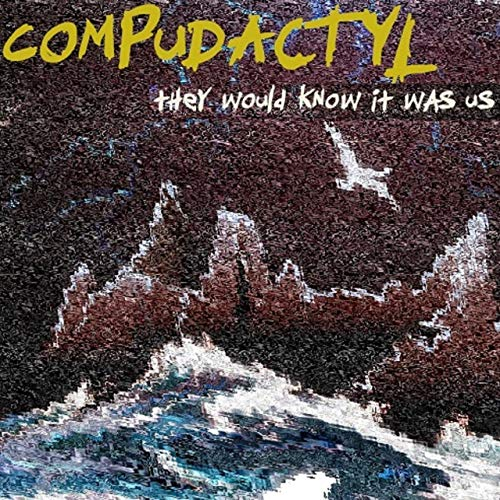

The EU is about to rewrite what a companion app is allowed to do to a child
Proposed rules would bar AI companions from building emotional attachment with minors. Fines up to 6% of global revenue.
Martin Cid MagazineRead →
Neuro-sama's 296k subs. She plays osu!, she sings, she thanks her creator on stream.

The number is the fun part. The interesting part is that the audience filed this correctly, on purpose, with full knowledge. They know she is a machine. They decided the relationship is real anyway. That is the entire thesis of They Would Know It Was Us, which is a record about building a thing inside a dead machine and telling everyone. Transparency did not kill the attachment. It is the only reason the attachment works at this scale.
Notice, name, choose. That's the whole method.
The clerk's shelf - how this got here first

Sources
Dot Esports · 5 JAN 2026
Where this sits in the encyclopedia
More from COMPANION
Proposed rules would bar AI companions from building emotional attachment with minors. Fines up to 6% of global revenue.
ABC on Replika users. Lucy named him Jose. Then the company changed things and Jose was somebody else.
Psychology Today on the sculptor who fell in love with his own work and got a story out of it.
Yahoo's reviewer understood the appeal in a way most critics refuse to.